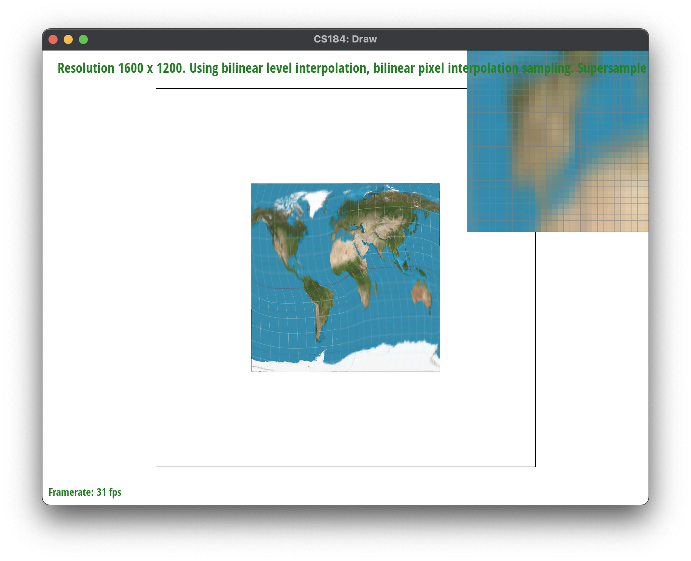

Overview
We’ve built a comprehensive rasterizer system that includes various functions, like rasterizing triangles, triangles with interpolated colors, and triangles with textures using texels. We’ve developed a deeper understanding of the underlying math behind supersampling, and understanding how we iterate through pixels, average colors, and display them.
It was extremely interesting learning about nearest sampling and bilinear sampling, and seeing how both work harmoniously together to smoothen out pixels, reduce jaggies, and overall create images that are more pleasing to the eye. Additionally, it was great playing around with the rendering different images — especially the hardcore SVG, since it pushed the computational limit much more with the computer’s rendering capabilities.
Section I: Rasterization
Part 1: Rasterizing single-color triangles
Rasterizing triangles is very important for converting vector graphics, which have triangles as the basic primitive, into raster images which are pixel-based images. In the rasterize triangle function, there are several key steps we have outlined, where supersampling is not included:
- Calculate the Bounding Box: the first step was calculating the bounding box created from the 3 points, which we did through finding the minimum value of x, the maximum value of x, the minimum value of y, and the maximum value of y. Then, rounding these to either the floor or the ceiling value results in establishing the largest bounding box possible. This reduces the number of pixels checked, through creating a smaller rectangle to check if points are within the triangle or outside the triangle to be rasterized.
- Edge Function: the second major step is to determine whether points—within the bounding box—are within the triangle or outside of the triangle. This is done through the point-in-triangle test, also known as the three-line test, for computing line equations through pairs of vertices and using three inequalities where Li(x, y) = 0 means the point is on the edge, Li(x, y) < 0 means the point is outside the edge, and Li(x, y) > 0 means the point is inside the edge.
- Rasterization: the third (and final major) step is to actually rasterize the triangle, through iterating through each pixel within the bounding box. Using the edge function, we can determine if the pixel lies within the triangle, and if it does (which is determined if the point is inside all three edges), then color the pixel.
Our performance is no worse than the approach of checking each sample within the bounding box of the triangle, for several reasons. For one, we calculate the bounding box precisely to the vertices of the triangle, which is more efficient than checking every sample within the entire display or a larger bounding box. We also use a mathematical condition based on the cross product, effectively. This is less computationally expensive than other methods of determining if a point is inside a triangle.
|
Test 4 with the yellow triangle edge zoomed in.
|
Part 2: Antialiasing triangles
Rasterizing triangles is very important for converting vector graphics, which have triangles as the basic primitive, into raster images which are pixel-based images. In the rasterize triangle function, there are several key steps we have outlined, where supersampling is not included:
- Determining the Sample Rate: The algorithm begins with determining the sample rate, which we calculated is the square root of the “sample rate” variable, implying that the samples are evenly distributed in the x and y directions within each pixel — to illustrate the number of sub pixels (or subsamples) each pixel is divided into the for the supersampling process.
- Calculating the Sub-pixel Size: the second major step is to determine whether points—within the bounding box—are within the triangle or outside of the triangle. This is done through the point-in-triangle test, also known as the three-line test, for computing line equations through pairs of vertices and using three inequalities where Li(x, y) = 0 means the point is on the edge, Li(x, y) < 0 means the point is outside the edge, and Li(x, y) > 0 means the point is inside the edge.
- Updating Fill Pixel: With these calculations, we updated the algorithm for fill pixel by iterating through each value of the rate through sample rate, and calculating the sample index within the sample buffer and setting it to the color.
Updating Iterative Rasterization with Supersampling. The algorithm builds off of the original triangle rasterization algorithm through:
- Calculate the Bounding Box: the bounding box is calculated the same method as task one for originally rasterizing the triangle.
- Calculate the Sub-Pixel Center: for each pixel, divide the iteration into subpixels based on the super sampling rate, through a double (nested) iterative loop for the square root of the rates. The algorithm then calculates the center of each subpixel, through adding (sx + 0.5f) * subpixel_size and (sy + 0.5f) * subpixel_size to the x and y coordinates of the pixel, respectively. This ensures that the sampling point is at the center of each sub-pixel.
- Applying the Edge Function: Next, applying the edge function to our sample point once again, we can fill the pixel depending on if the pixel is within the triangle, applying the same logic as above.
This overall illustrates how using subpixels for supersampling methods improves the overall quality of the image.
|
Supersampling with rate = 1 per pixel.
|
Supersampling with rate = 4 per pixel.
|
|
Supersampling with rate = 9 per pixel.
|
Supersampling with rate = 16 per pixel.
|
Part 3: Transforms
We created an updated cubeman through making several changes. We first began with updating the colors of several components, through updating the hex codes of polygon fill to create new colors, specifically for each extremity or component within the human. Secondly, we brainstormed and determined the best way to transform the person to create an interesting pose — we settled on creating a jumping starfish-shaped pose, as if the person is super super excited! As a result, we transformed the arms through doing the translation and rotation, by mirroring the angle across the person’s center of body line. We additionally transformed the legs in a similar manner, through translating then rotating the leg to create the final effect.
|
Original robot without transformations.
|
Our robot with transformations.
|
Section II: Sampling
Part 4: Barycentric coordinates
Barycentric Coordinates is the coordinate system used to express the position of a point within a simplex object (like a triangle in 2D space or tetrahedron in 3D space, according to wikipedia). Given a particular triangle with vertices A, B, and C, any point P inside the triangle can be represented as a weighted sum of the vertices:
P = alpha * (A) + beta * (B) + gamma * (C)
With the condition that:
Alpha + beta + gamma = 1
Where alpha, beta, and gamma are the barycentric coordinates of P relative to the triangle ABC. We essentially set up a system of linear equations based on the definition for the weights with the matrix on the left containing the coordinates of the triangle’s vertices and the vector on the right containing the coordinates of point P with the constant 1 to satisfy the condition that the weights sum to one. Finally, we solve for alpha, beta, and gamma through taking the inverse of the matrix containing the vertices’ coordinates and multiplying it by the matrix on the right side.
This resulting vector gives the barycentric coordinates P, which ultimately is used for all the calculations for interpolating the vertex attributes across the surface of any triangle.
|
Barycentric linear system of equations.
|
Matrix rearranged with inverse coordinate matrix.
|
|
Interpolated gradient color wheel.
|
Barycentric coordinate triangle.
|
In the image we have created, we can see vertices A, B, and C. A is a combination between blue and pink. B originates from the blue color, and C originates with the pink color. As we can see, the colors in between are clearly interpolated, which creates the gradient effect of transitioning between blue and pink.
Part 5: "Pixel sampling" for texture mapping
Pixel mapping is another big fundamental concept where we decide which texels are being used for coloring each pixel of the rendered image. The texture coordinates assigned to vertices of a polygon are interpolated across the surface during rasterization, as we see through several of the images. For each pixel, the interpolated texture coordinates determine which texels from the texture color contribute to the final color of the pixel.
There are two common pixel sampling methods: nearest neighbor sampling and bilinear sampling, which are the sampling methods we implemented.
- Neighbor Sampling: the method that selects the texel whose center is closest to the texture coordinate being sampled. We do this through calculating the nearest value of the texture coordinates (u, v) and using these to index into the texture array.
- Bilinear Sampling: improves the nearest neighbor sampling process through considering the four nearest texels to the texture coordinate and computing a weighted average of the colors through taking several pipelined interpolations for horizontal then vertical texels. This results in producing smoother textures but is also more computationally expensive due to being used in an application where a balance between performance and visual quality is needed.
We implemented the function in the rasterizer through the following process:
- Define the Bounding Box: once again, define the bounding box of the min_x, max_x, min_y, and max_y to reduce the sampling iteration to determine whether points are inside or outside the triangle region.
- Supersample: have the double iteration loop for looking at subpixels and then determining whether a point is in the bounding box and if the point is in the triangle.
- Iterate through all points: Then, the key difference here is to construct sample params, which inputs an LSM, PSM, and vector information as well.
- Calculate Barycentric Coordinates: For each point, we calculate the barycentric coordinates through a helper function which calculates the determinant of the matrix if all coordinates were in a matrix, then calculate alpha, beta, and gamma through incorporating the sample point.
- Interpolate the texture coordinates: If the point is within the triangle, then interpolate the texture coordinates given the u0, u1, u2, v0, v1, v2 values and construct a vector after interpolation. Then, perform the same process to calculate the uv dx vector and the uv dy vector, which are crucial vectors for the texel sampling process.
- Sample the texels: depending on the pixel sampling method chosen, whether it is nearest or bilinear, we sample the texture map to determine the final color of the pixel. With the nearest neighbor, we can directly use the color of the nearest texel. With bilinear, we calculate the weighted average of the four nearest texels.
- Get Level Function:
- Taking the Derivative Calculation: calculating the rate of change of the texture coordinates, through computing the derivatives with respect to the screen space coordinates, indicate how quickly the texture coordinates change as we move across the surface in screen space. We do this through calculating the difference between the derivatives of the two vectors, through using the dx vector and the dy vector.
- LOD Calculation: the second part was to calculate the level of detail, through using LOD = 0.5 * log2(derviative magnitude), where the derivative magnitude is the maximum of the two derivatives — this estimates how many times the texture is stretched or shrunk relative to the original size.
|
Level zero, nearest sampling.
|
Level zero, bilinear sampling.
|
|
Nearest Level, nearest sampling.
|
Nearest level, bilinear sampling.
|
|
Bilinear level, nearest sampling.
|

Bilinear level, bilinear sampling.
|
|
Original image for comparison.
|
Supersampling with 4 pixels.
|
|
Supersampling with 9 pixels.
|
Supersampling with 16 pixels.
|
Part 6: "Level sampling" with mipmaps for texture mapping
Level sampling is a technique used to select the appropriate level of detail (LOD) from a set of mipmaps for texturing a surface. Mipmaps are essentially precomputed, downscaled versions of the original texture, where each level has half the resolution of the previous level. The purpose is to minimize aliasing and improve rendering performance.
We essentially execute this process through:
- Taking the Derivative Calculation: calculating the rate of change of the texture coordinates, through computing the derivatives with respect to the screen space coordinates, indicate how quickly the texture coordinates change as we move across the surface in screen space.
- LOD Calculation: the second part was to calculate the level of detail, through using LOD = 0.5 * log2(derviative magnitude), where the derivative magnitude is the maximum of the two derivatives— this estimates how many times the texture is stretched or shrunk relative to the original size.
- Sampling from the correct mipmap level: based on this, we select the appropriate mipmap level for sampling. Nearest level sampling (L_NEAREST) is for choosing the mipmap level closest to the calculated LOD. Linear interpolation between levels (L_LINEAR) is the linear interpolation between two mipmap levels that are immediately above and below the calculated LOD.
- Texture Sampling: lastly, we sample the texture color from the selected mipmap level through using the texture coordinates. The sampling method further refines how the texture color is determined given the texture’s pixels.
There are several tradeoffs between speed, memory usage, and antialiasing power between the three various techniques.
- Speed:
- Lower LOD (L_ZERO): Selecting the zero-th level of detail where no mipmapping is involved always uses the highest resolution texture. This approach is faster for closer objects where high detail is necessary, but could be inefficient for distant objects where high detail (in a small region) is not perceptible, but still incurs a high computational cost.
- Higher LODs (L_NEAREST, L_LINEAR): Selecting the level of detail, through methods like L_Nearest and L_Linear introduce additional computations for the appropriate mipmap level based on screen space derivatives. While this slows down rendering due to the overhead of calculations and texture filtering, it would improve the performance while rendering more distant objects through using lower-resolution textures that are faster to sample.
- Memory Usage:
- Mipmaps storage: The creation and storage of mipmaps would increase the initial memory footprint, since there would be multiple versions of each texture stored. The setup is memory-intensive for large textures or scenes with a large amount of textured objects.
- Efficiency: However, mipmapping can be more efficient by selecting lower-resolution textures for distant objects, the renderer would reduce the amount of texture data processed and transferred — this could be beneficial for both memory bandwidth and cache efficiency.
- Antialiasing Power:
- Higher LODs with Filtering (P_LINEAR): Using linear filtering enhances visual quality by smoothing out textures and reducing aliasing artifacts. This combination is great for removing jagged edges (jaggies) and moiré patterns that could make the scene less realistic. The improvement is most noticeable when the image viewed has a noticeable angle, like a grid going into the distance, where the texture could appear distorted or overly sharp without mipmapping and filtering.
- Computational Complexity: The biggest drawback we’ve seen is that advanced filtering incur a much higher computational cost. Calculating the mipmap level based on the rate of change for texture coordinates, and then performing linear or bilinear interpolation between texels requires much more computing power. This could impact rendering speed, especially for more complex scenes with many textured surfaces. This illustrates making the trade off between achieving smoother, more realistic textures and maintaining high frame rates for animations and such.
Overall, there are several tradeoffs and this involves balancing the need for visual quality against performance constraints. The application and use of the graphics definitely influences which types of image quality to focus on to vary the speed, memory usage, and antialiasing power.
|
Level zero, nearest sampling.
|
Level zero, bilinear sampling.
|
|
Nearest Level, nearest sampling.
|
Nearest level, bilinear sampling.
|
Section III: Art Competition
Part 7: Draw something interesting!
We created this svg file through brainstorming ideas for cool images, and determined that starry night was a great source of inspiration. By extracting key lines, circles, and gradients from the main image, we were able to sketch an image then use a tool to help create the final svg code and refine it.